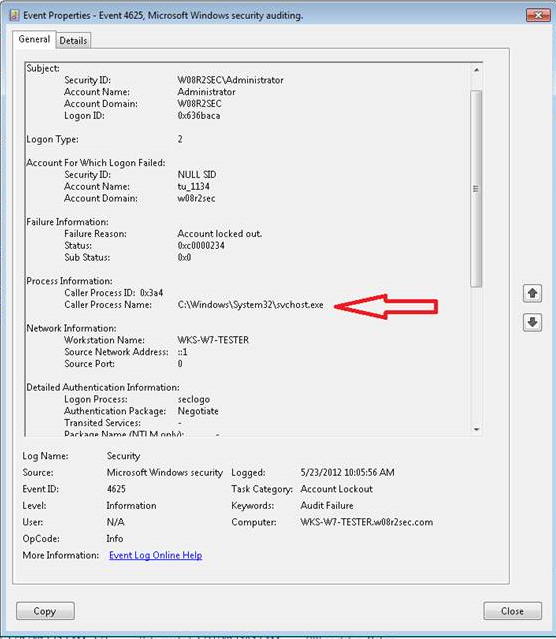

NetWrix Account Lockout Examiner relies on the Windows audit system.
Name of the process is logged in the invalid logon event (4625 in Windows
Vista/2008/7/2008R2, events 529-539 in older versions).
Account Lockout Examiner will not show name of the process if either there is no
corresponding invalid logon event or the name of the process is not tracked by Windows
Audit.
This can occur due to several reasons, for example:
- Kerberos authentication that takes place before an actual account logon failed, so there is only invalid Kerberos logon event but no account logon event tracked (the most common)
- Windows XP invalid logon events (event 529) do not contain the name of the process that caused this event.
- Events logged due to entering invalid credentials in an RDP client window normally do not contain the name of the process that caused this event.